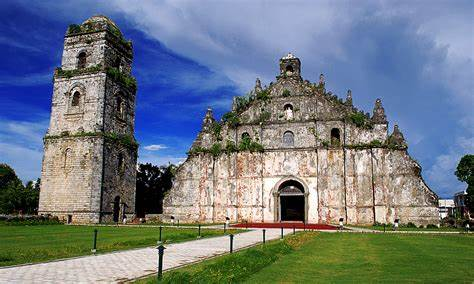
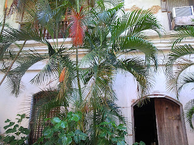

History
Ilocos Norte is a province located in the northern part of the Philippines. It has a rich history that spans centuries, with influences from indigenous peoples, Spanish colonizers, and various other cultures that have interacted with the region over time.
Here is an overview of the history of Ilocos Norte:
1. **Pre-colonial Period**: Before the arrival of the Spanish colonizers in the Philippines in the 16th century, the area that is now Ilocos Norte was inhabited by various indigenous groups, including the Ilocanos, Tingguians, and Igorots. These indigenous peoples had their own languages, cultures, and social structures.
2. **Spanish Colonization**: Spanish colonization began in the Philippines with the arrival of the Portuguese explorer Ferdinand Magellan in 1521. However, it wasn't until the arrival of Spanish conquistador Juan de Salcedo in the late 16th century that the Ilocos region came under Spanish control. The Spanish established Vigan, now part of Ilocos Sur, as one of the earliest Spanish settlements in the Philippines.
3. **Augustinian Missionaries**: The Augustinian friars played a significant role in the Christianization and colonization of the Ilocos region. They established missions and converted many of the indigenous peoples to Christianity. The Spanish also introduced new agricultural techniques, crops such as tobacco, and built churches and other infrastructure in the region.
4. **Revolt against Spanish Rule**: Like many other parts of the Philippines, the people of Ilocos Norte resisted Spanish rule at various times. One notable revolt was led by Diego Silang and his wife Gabriela Silang in the 18th century. They fought against Spanish oppression and injustices, although their revolt was eventually suppressed by Spanish forces.
5. **American Colonial Period**: With the defeat of Spain in the Spanish-American War of 1898, the Philippines came under American rule. The Americans introduced new political and administrative structures, as well as modern education and infrastructure development in Ilocos Norte.
6. **World War II**: During World War II, Ilocos Norte, like the rest of the Philippines, experienced the horrors of Japanese occupation. The province became a battleground between Japanese and American forces, resulting in significant destruction and loss of life.
7. **Post-Independence Period**: The Philippines gained independence from the United States in 1946. Since then, Ilocos Norte has been part of the independent Philippines, experiencing political, economic, and social changes along with the rest of the country.
Today, Ilocos Norte is known for its beautiful landscapes, rich cultural heritage, and historical landmarks, attracting tourists from all over the world who come to explore its history and natural beauty.
Geography
Ilocos Norte is a province located in the northern part of the Philippines. It is situated on the northwestern coast of Luzon, the largest island in the Philippine archipelago. Here are some key geographical features of Ilocos Norte:
1. **Coastline**: Ilocos Norte is characterized by a rugged coastline along the West Philippine Sea (also known as the South China Sea). The coastline is dotted with cliffs, beaches, and rock formations, making it a popular destination for tourists.
2. **Mountain Ranges**: The eastern part of Ilocos Norte is dominated by mountain ranges and hills. These mountainous areas are part of the Cordillera Central mountain range, which runs through much of northern Luzon.
3. **River Systems**: Several rivers flow through Ilocos Norte, providing water for irrigation and other agricultural purposes. The most prominent rivers include the Padsan River, the Bolo River, and the Abra River, which forms part of the boundary between Ilocos Norte and Abra province.
4. **Valleys and Plains**: Despite its rugged terrain, Ilocos Norte also features valleys and plains, particularly along the coastal areas and near river basins. These fertile plains are ideal for agriculture and have made Ilocos Norte one of the major rice-producing provinces in the Philippines.
5. **Climate**: Ilocos Norte has a tropical climate characterized by two distinct seasons: the dry season, which typically lasts from November to April, and the wet season, which occurs from May to October. The province experiences relatively high temperatures throughout the year, with occasional typhoons during the rainy season.
6. **Natural Attractions**: Ilocos Norte is home to several natural attractions, including sand dunes, waterfalls, and scenic coastal areas. The La Paz Sand Dunes in Laoag City is one of the most famous natural landmarks in the province, offering opportunities for sandboarding and off-road adventures.
7. **Biodiversity**: Despite its relatively small size, Ilocos Norte boasts a diverse range of flora and fauna. Its coastal areas support marine life, while its inland forests are home to various species of plants and animals.
Overall, the geography of Ilocos Norte is diverse and picturesque, offering a blend of coastal landscapes, mountainous terrain, and fertile plains that contribute to its natural beauty and appeal.
Demographics

Economy
The economy of Ilocos Norte, like many provinces in the Philippines, is primarily based on agriculture, fishing, tourism, and increasingly, services and industry. Here's a breakdown of the key sectors contributing to the economy of Ilocos Norte:
Agriculture: Agriculture remains a significant sector in Ilocos Norte. The province is known for the cultivation of rice, corn, tobacco, garlic, and other crops. The fertile plains and river basins provide ideal conditions for agriculture, and farming continues to be a major source of livelihood for many residents.
Fishing: With its extensive coastline along the West Philippine Sea, fishing is an important economic activity in Ilocos Norte. Coastal communities engage in both commercial and subsistence fishing, supplying seafood not only to local markets but also to other parts of the country.
Tourism: Tourism has been growing in importance as a key economic driver for Ilocos Norte. The province boasts a variety of tourist attractions, including historical sites, natural wonders, and cultural landmarks. Some of the popular tourist destinations include the UNESCO World Heritage-listed Paoay Church, the Cape Bojeador Lighthouse, the sand dunes of Paoay and La Paz, and the famous windmills of Bangui. Tourism generates income for local businesses, hotels, restaurants, and transportation services.
Services: The service sector, including retail, hospitality, healthcare, education, and other services, contributes significantly to the economy of Ilocos Norte. The growth of urban centers such as Laoag City has led to increased demand for various services, creating employment opportunities and supporting local businesses.
Industry: While not as dominant as agriculture and services, the industrial sector is growing in importance in Ilocos Norte. The province is home to small-scale manufacturing activities, particularly in food processing, handicrafts, and furniture production. There are also efforts to promote renewable energy projects, including wind farms and solar power installations, which contribute to the province's energy production and revenue generation.
Remittances: Like many other provinces in the Philippines, remittances from overseas Filipino workers (OFWs) also play a significant role in the economy of Ilocos Norte. Many residents work abroad and send money back to their families, which helps support household incomes and local businesses.
Tourism and Attractions
Ilocos Norte offers a wide range of tourist attractions and activities for visitors to enjoy. Some of the popular attractions include:
- Province of Ilocos Norte 
- Paoay Church Ilocos Norte
- Windmills
- Paoay Lake
- Cape Bojeador Lighthouse 
- Marcos house in Batac
Additionally, the city hosts various festivals and events throughout the year, such as the Kagay-an Festival and Higalaay Festival, showcasing the vibrant culture and traditions of the region.
Schools and Universities
Ilocos Norte is home to several reputable educational institutions, offering quality education from preschool to higher education levels. Some of the prominent schools and universities include:
- Ilocos Norte Polytechnic State College
- Ilocos Norte National High School
- 3.Mariano Marcos State University
- University of Northern Philippines
- Mariano Marcos Memorial State University
These institutions provide a wide range of academic programs and facilities to cater to the educational needs of students in the region.